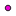

<!doctype html>
<html lang="en">
    <head>
        <meta charset="utf-8">
        <meta http-equiv="X-UA-Compatible" content="IE=edge">
        <meta name="viewport" content="initial-scale=1,user-scalable=no,maximum-scale=1,width=device-width">
        <meta name="mobile-web-app-capable" content="yes">
        <meta name="apple-mobile-web-app-capable" content="yes">
        <link rel="stylesheet" href="css/leaflet.css">
        <link rel="stylesheet" href="css/qgis2web.css"><link rel="stylesheet" href="css/fontawesome-all.min.css">
        <link rel="stylesheet" href="css/leaflet-measure.css">
        <style>
        html, body, #map {
            width: 100%;
            height: 100%;
            padding: 0;
            margin: 0;
        }
        </style>
        <title></title>
    </head>
    <body>
        <div id="map">
        </div>
        <script src="js/qgis2web_expressions.js"></script>
        <script src="js/leaflet.js"></script>
        <script src="js/leaflet.rotatedMarker.js"></script>
        <script src="js/leaflet.pattern.js"></script>
        <script src="js/leaflet-hash.js"></script>
        <script src="js/Autolinker.min.js"></script>
        <script src="js/rbush.min.js"></script>
        <script src="js/labelgun.min.js"></script>
        <script src="js/labels.js"></script>
        <script src="js/leaflet-measure.js"></script>
        <script src="data/EdgeofShrubLines_1.js"></script>
        <script src="data/PotentialSamplingPoints_2.js"></script>
        <script src="data/CalPolyPropertyBoundary_3.js"></script>
        <script>
        var map = L.map('map', {
            zoomControl:true, maxZoom:28, minZoom:1
        }).fitBounds([[35.29966314761518,-120.67333984516166],[35.320579464834545,-120.6433710216841]]);
        var hash = new L.Hash(map);
        map.attributionControl.setPrefix('<a href="https://github.com/tomchadwin/qgis2web" target="_blank">qgis2web</a> &middot; <a href="https://leafletjs.com" title="A JS library for interactive maps">Leaflet</a> &middot; <a href="https://qgis.org">QGIS</a>');
        var autolinker = new Autolinker({truncate: {length: 30, location: 'smart'}});
        var measureControl = new L.Control.Measure({
            position: 'topleft',
            primaryLengthUnit: 'meters',
            secondaryLengthUnit: 'kilometers',
            primaryAreaUnit: 'sqmeters',
            secondaryAreaUnit: 'hectares'
        });
        measureControl.addTo(map);
        document.getElementsByClassName('leaflet-control-measure-toggle')[0]
        .innerHTML = '';
        document.getElementsByClassName('leaflet-control-measure-toggle')[0]
        .className += ' fas fa-ruler';
        var bounds_group = new L.featureGroup([]);
        function setBounds() {
        }
        map.createPane('pane_AerialImageryEsri_0');
        map.getPane('pane_AerialImageryEsri_0').style.zIndex = 400;
        var layer_AerialImageryEsri_0 = L.tileLayer('https://server.arcgisonline.com/ArcGIS/rest/services/World_Imagery/MapServer/tile/{z}/{y}/{x}', {
            pane: 'pane_AerialImageryEsri_0',
            opacity: 1.0,
            attribution: '',
            minZoom: 1,
            maxZoom: 28,
            minNativeZoom: 0,
            maxNativeZoom: 19
        });
        layer_AerialImageryEsri_0;
        map.addLayer(layer_AerialImageryEsri_0);
        function pop_EdgeofShrubLines_1(feature, layer) {
            var popupContent = '<table>\
                    <tr>\
                        <td colspan="2">' + (feature.properties['fid'] !== null ? autolinker.link(feature.properties['fid'].toLocaleString()) : '') + '</td>\
                    </tr>\
                </table>';
            layer.bindPopup(popupContent, {maxHeight: 400});
        }

        function style_EdgeofShrubLines_1_0() {
            return {
                pane: 'pane_EdgeofShrubLines_1',
                opacity: 1,
                color: 'rgba(0,0,0,1.0)',
                dashArray: '',
                lineCap: 'square',
                lineJoin: 'bevel',
                weight: 3.0,
                fillOpacity: 0,
                interactive: false,
            }
        }
        map.createPane('pane_EdgeofShrubLines_1');
        map.getPane('pane_EdgeofShrubLines_1').style.zIndex = 401;
        map.getPane('pane_EdgeofShrubLines_1').style['mix-blend-mode'] = 'normal';
        var layer_EdgeofShrubLines_1 = new L.geoJson(json_EdgeofShrubLines_1, {
            attribution: '',
            interactive: false,
            dataVar: 'json_EdgeofShrubLines_1',
            layerName: 'layer_EdgeofShrubLines_1',
            pane: 'pane_EdgeofShrubLines_1',
            onEachFeature: pop_EdgeofShrubLines_1,
            style: style_EdgeofShrubLines_1_0,
        });
        bounds_group.addLayer(layer_EdgeofShrubLines_1);
        map.addLayer(layer_EdgeofShrubLines_1);
        function pop_PotentialSamplingPoints_2(feature, layer) {
            var popupContent = '<table>\
                    <tr>\
                        <td colspan="2">' + (feature.properties['fid'] !== null ? autolinker.link(feature.properties['fid'].toLocaleString()) : '') + '</td>\
                    </tr>\
                    <tr>\
                        <td colspan="2">' + (feature.properties['rand_point_id'] !== null ? autolinker.link(feature.properties['rand_point_id'].toLocaleString()) : '') + '</td>\
                    </tr>\
                </table>';
            layer.bindPopup(popupContent, {maxHeight: 400});
        }

        function style_PotentialSamplingPoints_2_0() {
            return {
                pane: 'pane_PotentialSamplingPoints_2',
                radius: 4.0,
                opacity: 1,
                color: 'rgba(35,35,35,1.0)',
                dashArray: '',
                lineCap: 'butt',
                lineJoin: 'miter',
                weight: 1,
                fill: true,
                fillOpacity: 1,
                fillColor: 'rgba(238,3,214,1.0)',
                interactive: false,
            }
        }
        map.createPane('pane_PotentialSamplingPoints_2');
        map.getPane('pane_PotentialSamplingPoints_2').style.zIndex = 402;
        map.getPane('pane_PotentialSamplingPoints_2').style['mix-blend-mode'] = 'normal';
        var layer_PotentialSamplingPoints_2 = new L.geoJson(json_PotentialSamplingPoints_2, {
            attribution: '',
            interactive: false,
            dataVar: 'json_PotentialSamplingPoints_2',
            layerName: 'layer_PotentialSamplingPoints_2',
            pane: 'pane_PotentialSamplingPoints_2',
            onEachFeature: pop_PotentialSamplingPoints_2,
            pointToLayer: function (feature, latlng) {
                var context = {
                    feature: feature,
                    variables: {}
                };
                return L.circleMarker(latlng, style_PotentialSamplingPoints_2_0(feature));
            },
        });
        bounds_group.addLayer(layer_PotentialSamplingPoints_2);
        map.addLayer(layer_PotentialSamplingPoints_2);
        function pop_CalPolyPropertyBoundary_3(feature, layer) {
            var popupContent = '<table>\
                    <tr>\
                        <td colspan="2">' + (feature.properties['LAYER'] !== null ? autolinker.link(feature.properties['LAYER'].toLocaleString()) : '') + '</td>\
                    </tr>\
                    <tr>\
                        <td colspan="2">' + (feature.properties['ID'] !== null ? autolinker.link(feature.properties['ID'].toLocaleString()) : '') + '</td>\
                    </tr>\
                </table>';
            layer.bindPopup(popupContent, {maxHeight: 400});
        }

        function style_CalPolyPropertyBoundary_3_0() {
            return {
                pane: 'pane_CalPolyPropertyBoundary_3',
                opacity: 1,
                color: 'rgba(255,1,1,1.0)',
                dashArray: '',
                lineCap: 'butt',
                lineJoin: 'miter',
                weight: 1.0, 
                fill: true,
                fillOpacity: 1,
                fillColor: 'rgba(227,26,28,0.0)',
                interactive: false,
            }
        }
        map.createPane('pane_CalPolyPropertyBoundary_3');
        map.getPane('pane_CalPolyPropertyBoundary_3').style.zIndex = 403;
        map.getPane('pane_CalPolyPropertyBoundary_3').style['mix-blend-mode'] = 'normal';
        var layer_CalPolyPropertyBoundary_3 = new L.geoJson(json_CalPolyPropertyBoundary_3, {
            attribution: '',
            interactive: false,
            dataVar: 'json_CalPolyPropertyBoundary_3',
            layerName: 'layer_CalPolyPropertyBoundary_3',
            pane: 'pane_CalPolyPropertyBoundary_3',
            onEachFeature: pop_CalPolyPropertyBoundary_3,
            style: style_CalPolyPropertyBoundary_3_0,
        });
        bounds_group.addLayer(layer_CalPolyPropertyBoundary_3);
        map.addLayer(layer_CalPolyPropertyBoundary_3);
        var baseMaps = {};
        L.control.layers(baseMaps,{' Cal Poly Property Boundary': layer_CalPolyPropertyBoundary_3,' Potential Sampling Points': layer_PotentialSamplingPoints_2,' Edge of Shrub Lines': layer_EdgeofShrubLines_1,"Aerial Imagery (Esri)": layer_AerialImageryEsri_0,},{collapsed:false}).addTo(map);
        setBounds();
        </script>
    </body>
</html>
